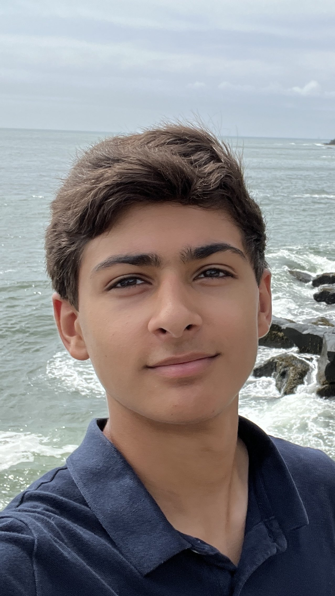

I am Rohan Sareen, a 15-year-old sophomore currently attending Staples High School. My interests include software and mechanical engineering, golf, running, and skiing. I am a Certified SolidWorks Associate (CSWA) for mechanical engineering. I am using that experience to start a non-profit project with my local library to engineer low-cost solar-powered lanterns to donate to homeless citizens in the greater Norwalk area. I am now learning more about software engineering to create Neighborly Networks in hopes of helping those who are sick get the items they need. In school, I am the Head of Engineering for our very own Sikorsky STEM club where we compete every year in a state-wide engineering competition hosted by the Sikorsky Lockheed Martin agency. I am also the Vice President for E-Nable 3D in which we 3D print free prosthetic limbs for amputees who cannot afford a medical-grade prosthetic.
I am Sahil Vora, a 15 year-old rising sophomore currently attending Staples High School. As a STEM student, I’ve always been very interested in science and math; additionally, playing chess is one of my biggest passions. Winning the George Lenchner Award for a perfect score in the Math Olympiad and proceeding to Nationals for the USNCO were some really fun experiences which taught me a lot. Additionally, having a FIDE rating of 1785, I was top 100 nationally for my age and, of everyone who has ever played, am currently top 100 in the state: one of my best wins includes first at the North East Open. In school, I have been vice president of the chess club since early freshman year and have extended my passion by teaching kids from numerous schools how to play and improve at chess! Talking with Rohan, who’s also very passionate about helping others, since the end of the summer, we have been discussing of an app that can help those who need it, whether elderly or sick: that is, Neighborly Network!